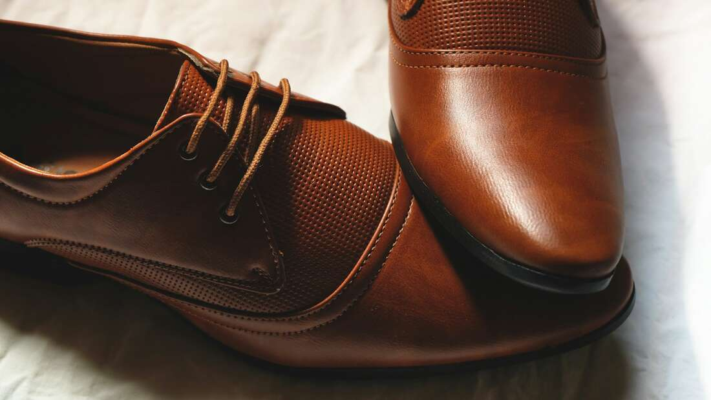

Heels
- What it covers
- Worn heels and heel tips replaced on men’s and women’s shoes.
- Good to know
- If it slopes when you look from behind, it’s due.
At the bench
The everyday fixes that keep good shoes going for years. No price list — every pair is quoted on what it actually needs.

Example services — we'd confirm these with you.